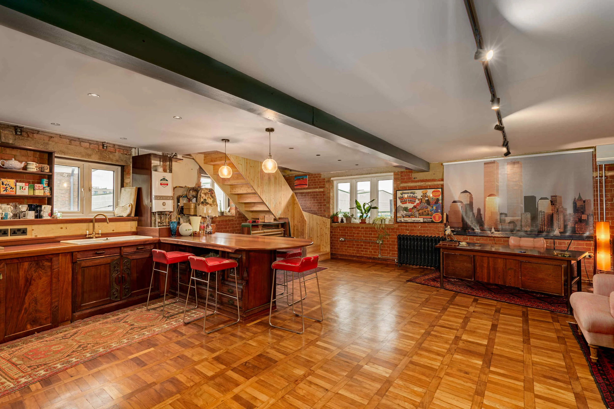
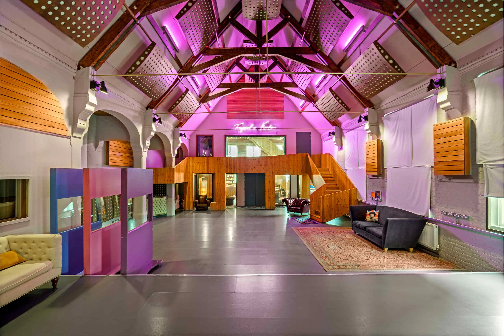
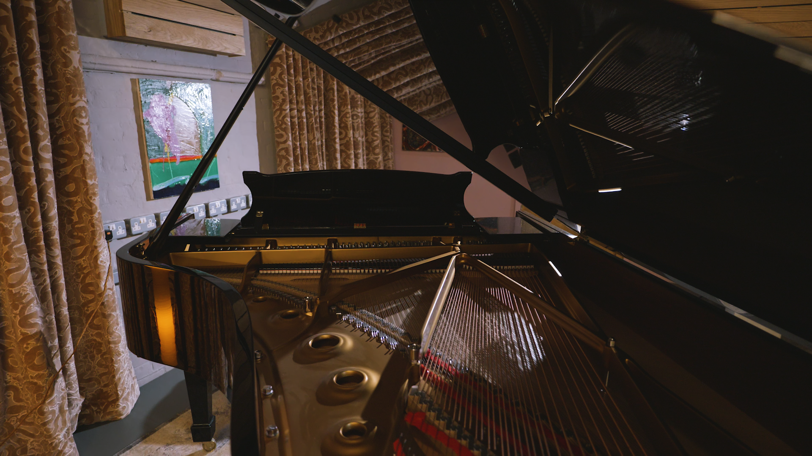

Why Choosing the Right Podcast Studio in London Matters More Than You Think
Podcasting has evolved. It's no longer two people in a bedroom with USB microphones — it's brand strategy, authority building and increasingly, video-first distribution.
Read More
Podcasting has evolved. It's no longer two people in a bedroom with USB microphones. It's brand strategy, authority building, cinematic storytelling, and increasingly — video-first distribution. If you're searching for a podcast studio in London, you're probably past the "DIY experiment" stage. You care about quality, presence, and how your show looks and sounds.
Sound is 80% of your podcast. You can forgive average video. You cannot forgive bad audio. The difference between a carpeted office room, a foam-padded box, and a purpose-built live acoustic space is enormous. At The Empire Studio, podcast sessions benefit from 30ft vaulted pine ceilings, natural reverb controlled by professional acoustic design, isolation where needed, control room-grade monitoring and a full lighting system.
Video podcasting has changed the game. Your podcast is no longer just audio — it's content infrastructure. A serious setup should include multi-camera recording, proper lighting, clean backdrops, real depth in frame and on-site monitoring. Natural light — rarely found in London studios — creates a completely different atmosphere on camera.
Hosting with a live audience. At Empire Studio, the theatre-style layout allows you to record in front of guests, capture crowd reactions, host ticketed live tapings and film full sessions for distribution — while most London podcast studios cap out at 3–4 people.
Before you book anywhere, ask: is it acoustically treated professionally? Can they handle video properly? Is there natural light or only LED panels? Can it scale for audience recordings? Because listeners might forgive average ideas — they won't forgive average execution.

Creative Uses of EBC Studio's Large Live Room
EBC hosts the largest live room in East London, at 153 sqm. Acoustically designed by Roger D'Arcy, it unlocks a wealth of creative possibilities.
Read More
EBC Studio hosts the largest live room in East London, at 153 sq m (15.3 x 10). In music production, the space in which music is recorded can significantly impact the final product's quality and feel — and Roger D'Arcy's acoustic design balances natural reverb with clarity, warmth and space.
Natural reverb. The room's architecture allows sound to bloom, travel and return with just the right amount of warmth — particularly for drums, strings and vocals — often outperforming artificial reverb plugins.
Orchestras, ensembles and big bands. Musicians can perform together in the space rather than layering parts in isolation, capturing a cohesive, live performance feel perfect for film scores, jazz ensembles and live albums.
Experimental technique. Producers can place a guitar amp at one end of the space and mic it from a distance to create a sense of air, or capture vocals from across the room for a distant, haunting effect.
Foley and sound design. The acoustics allow for realistic spatial recordings that replicate expansive environments — from grand halls to open landscapes — ideal for film, TV and game audio.

Why East London is the Ultimate Hub for Musicians and Artists
From grime legends like Dizzee Rascal and Wiley to indie icons like The Libertines, East London has shaped the UK's musical landscape.
Read More
East London has long been a creative powerhouse — the birthplace of grime, home to indie icons like The Libertines and Bloc Party, and a stronghold for techno and electronic music at clubs like Fabric, XOYO and Village Underground.
Grime music emerged from the streets of East London in the early 2000s through artists like Dizzee Rascal, Wiley and Kano, raised in Bow — raw, real and reflective of the diverse urban life in the area. Meanwhile Shoreditch, Dalston and Hackney nurtured an indie and alternative scene, with Bloc Party and The xx cutting their teeth in gritty East End venues.
Beyond the famous names, East London remains home to niche artists and emerging talent — from genre-blending acts like Shygirl and Bakar to the visual artists who have transformed Hackney Wick's former industrial spaces into creative studios.
Our studio, based in the heart of East London, is proud to be part of this creative ecosystem — offering competitive rates, flexible booking and a welcoming environment for musicians of all genres.
East London's Rising Stars: Musicians and Artists Shaping the Sound of the City
Discover the artists shaping East London's soundscape, and why the area remains a unique incubator for creativity.
Read More
East London has always been a cultural melting pot, with a deep history of innovation in art, music and fashion — from grime's gritty origins on the streets of Bow and Hackney to indie rock and techno.
Names like Wiley, Dizzee Rascal and Kano laid the foundations of grime, while newer artists like Stormzy keep the fire burning. Areas like Shoreditch and Dalston nurtured Bloc Party, The Libertines and The xx, and clubs like Fabric and XOYO continue to draw electronic talent from around the world.
What unites the scene is collaboration — musicians, producers, filmmakers and visual artists coming together to create cross-disciplinary projects that break down traditional boundaries. Studios like ours play a role in facilitating that, offering state-of-the-art equipment and a comfortable environment so artists have the tools to create their best work.
We're passionate about supporting the next generation — providing affordable recording options, mentorship and guidance to help new artists navigate the industry.

Hellraiser Soundtrack Recorded at EBC
The haunting soundtrack for 'Hellraiser', composed by Ben Lovett, was recorded in EBC's acoustically treated live room.
Read More
In the heart of East London, Empire Broadcasting Corporation (EBC) Studio became the epicentre of groundbreaking music production for the highly anticipated soundtrack of "Hellraiser," composed by Ben Lovett — known for his work on Synchronicity and The Night House.
Lovett's score pays homage to Christopher Young's original neo-gothic compositions while introducing new sonic elements. His use of piano melodies juxtaposed with low-frequency electronics creates an atmosphere both seductive and sickening.
Recorded in EBC's state-of-the-art facilities, every note resonates with precision and depth — the acoustically treated live room, designed by Roger D'Arcy, captures the full spectrum of Lovett's intricate soundscapes, from hauntingly beautiful piano sequences to bone-chilling electronic undertones.
A Grand Addition: Steinway Piano Installed at EBC Studio
EBC Studio announces the latest addition to its world-class recording facilities — a magnificent Steinway & Sons grand piano.
Read More
Empire Broadcasting Corporation (EBC) Studio in East London is thrilled to announce the latest addition to its world-class recording facilities — a magnificent Steinway & Sons grand piano. Renowned for their unparalleled craftsmanship and exquisite sound, Steinway pianos have been the choice of legendary musicians for over a century.
The Steinway grand piano, known for its rich tonal quality and responsive touch, offers artists an exceptional instrument that can elevate any musical project — whether recording a classical masterpiece, jazz improvisation or contemporary composition.
Our acoustically treated live room, designed by acclaimed architect Roger D'Arcy, ensures each note resonates with clarity and depth, ideal for both solo performances and ensemble recordings.

86TVs Electrifies EBC Studio with Live Performance
86TVs brought tracks like 'Higher Love,' 'Spinning World' and 'Dreaming' to life in a world-class recording environment.
Read More
Empire Broadcasting Corporation (EBC) Studio recently played host to an electrifying live performance by 86TVs, marking a significant milestone for the band and their fans. The debut EP "You Don't Have To Be Yourself Right Now" and single "New Used Car," along with their self-titled debut album, are available via Parlophone Records.
The live session at EBC Studio showcased 86TVs' dynamic energy, bringing tracks like "Higher Love," "Spinning World" and "Dreaming" to life in a way that only a world-class recording environment can facilitate. Directed by Polocho and produced by Miquel Agell under Say Goodnight Films, the video production matched the sonic excellence of EBC's facilities.

Artist Spotlight: Aaron Taylor
Known for his soulful voice and captivating performances, Aaron Taylor has been making waves with his blend of R&B, soul and contemporary sounds.
Read More
Empire Broadcasting Corporation (EBC) Studio is proud to shine the spotlight on a truly exceptional talent — Aaron Taylor. Known for his soulful voice and captivating performances, Aaron has been making waves with his unique blend of R&B, soul and contemporary sounds, influenced from a young age by legends like Stevie Wonder and Marvin Gaye.
Aaron graced EBC Studio to work on tracks from his latest album, including "Be Alright," "Wanna Be Close" and "Get Through This Together" — collaborating with our in-house engineers to bring his vision to life with unparalleled clarity and depth.